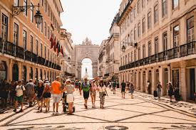

Nueva York

¡Bienvenidos/as a Nueva York, Comiviajeros/as! <3 Nueva York… Ese sueño viajero de tanta gente que nosotros hemos tenido la suerte de cumplir dos veces 🙂 La primera vez que estuvimos en la ciudad que nunca duerme no nos conocíamos, así que lo hicimos por separado. Por lo tanto, visitar Nueva York juntos era una de nuestras cuentas pendientes. Y en este mega guía de Nueva York solo esperamos poder transmitirte lo que amamos esta ciudad, con todas sus cosas buenas y malas (que también las tiene). En esta súper guía de Nueva York vas a encontrar todo lo que necesitas para preparar tu viaje de la forma más fácil y rápida: qué ver en Nueva York, itinerario completo para una semana, presupuesto, consejos, dónde comer, donde dormir, curiosidades, cómo moverte por Nueva York, cosas fundamentales que tienes que tener en cuenta a la hora de organizar el viaje, tarjetas turísticas
Leer másPortugal
Aventuras en Portugal
Si quisieras pegarte un súper atracón de Portugal (de los que sientan divinamente) necesitarías un mínimo de 3 semanas: 5 ó 6 días para el Algarve y el sur de Portugal, 3 días para Lisboa, 3 días para Porto y el resto para descubrir la costa atlántica y el interior del país que tiene mucho que ofrecer. Y aquí no estoy contando las islas (¿por qué las guías de viaje de Portugal no incluyen las fucking islas?). Madeira y Azores necesitan al menos una semana cada una (son archipiélagos con varias islas cada uno). Y sí, nosotros sí que te vamos a hablar de ellas.
Leer más